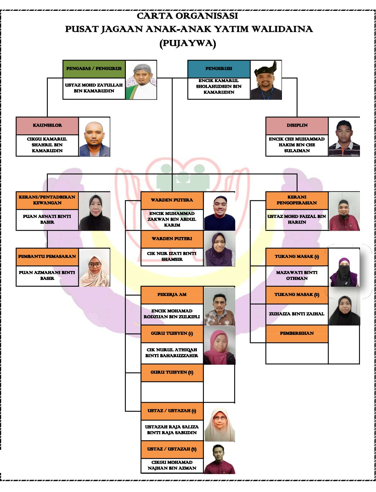
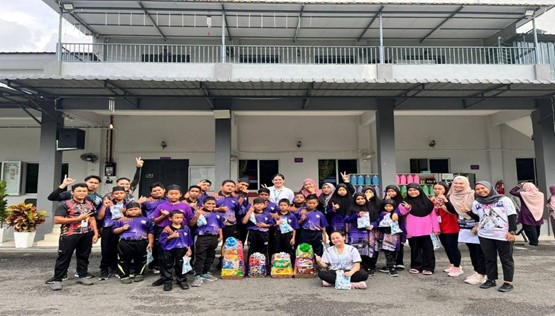
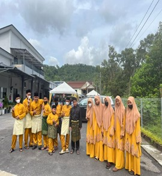
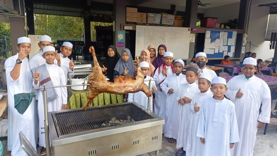
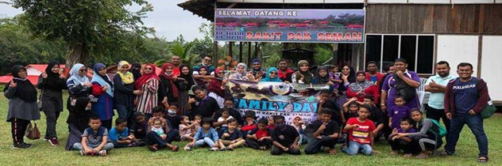
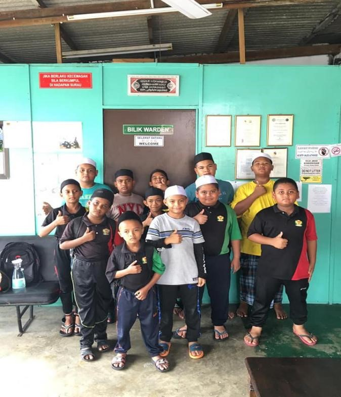

BACKGROUND OF WALIDAINA ORPHANAGE
The Walidaina Orphan Care Center was established in January 2017 address at the ORPHAN CARE CENTER LOT 20082 BATU 7, JLN PANTAI, 71770 SEREMBAN N.S This Care Center was founded by a young man named Mohd Zatullah Kamarudin who was 25 years old at the time. He has a Diploma in Shariah and Law at a local university. At first this care center was inhabited by 20 people (5 women and 15 men).This care center has been registered with the Department of Social Welfare (JKM) with registration certificate number: N/PJB KK 04/2018
ORGANISATION CHART AND MEMORISE





